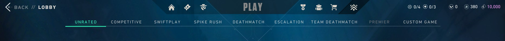
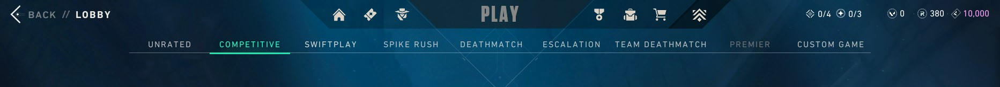
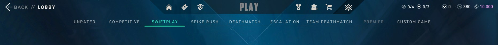
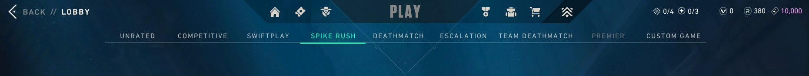
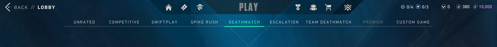
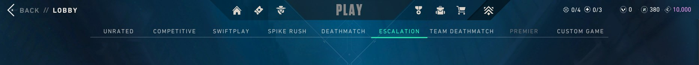
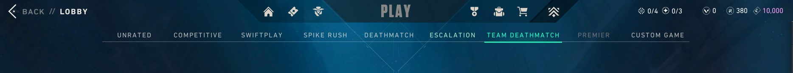
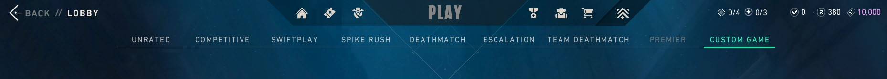

Explore the different fun gamemodes that Valorant has to offer. Each gamemode provides a
different type of
gameplay.
Unrated (also known as Standard or Normals) is the base game mode in VALORANT. It is a Plant/Defuse mode for two teams of five players where each team plays as either Attacker or Defender. Find out more at the valorant wiki.

Competitive (also known as Ranked) is a game mode in VALORANT. It uses the same in-game rules and format as Unrated, but with a focus on higher-stakes competition. Winning each game earns RR (Ranked Rating) while loosing each game costs RR. Find out more at the valorant wiki.

Swiftplay is a best-of-nine spike (Plant/Defuse) mode. It has most of the same gameplay rules as Unrated but with some changes to adjust for its shorter duration. Find out more at the valorant wiki.

Spike Rush is a faster-paced game mode. Pre-round time is reduced to 20 seconds (usually 30) and game time is reduced to 80 seconds (usually 100). While the attackers have less time to plant, they also have the advantage of each player having a spike. The game ends when one team reaches 4 round wins, teams switch sides after 3 rounds. Find out more at the valorant wiki.

Deathmatch is a multiplayer free-for-all game mode designed to allow players to hone their gunplay mechanics or warm up before playing Competitive. Each player loads into a random map with a random agent that they own. Players start in a brief warm-up phase before the real game starts. Players cannot buy or use abilities but are automatically given Heavy Shields. They can buy whatever weapons they want. Find out more at the valorant wiki.

Escalation is a 5v5 gun game type game mode where each kill earns points which leads to another weapon. Find out more at the valorant website.

Team Deathmatch is a TDM-style game mode in VALORANT where two teams fight on a small map to get the most kills using a variety of weapons and their agents' abilities. Find out more at the valorant website.

Competitive (also known as Ranked) is a game mode in VALORANT. It uses the same in-game rules and format as Unrated, but with a focus on higher-stakes competition. Winning each game earns RR (Ranked Rating) while loosing each game costs RR. Find out more at gamezo.
